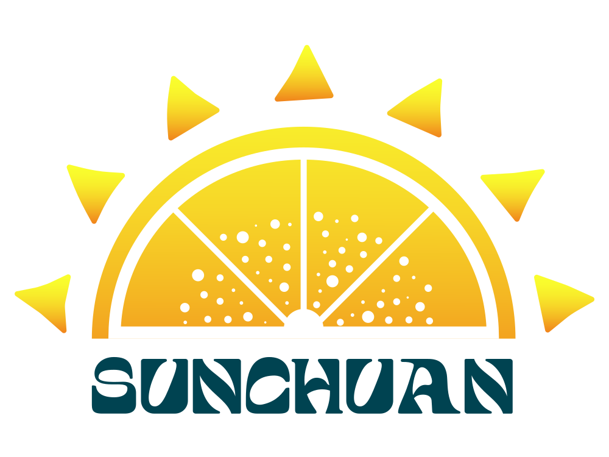
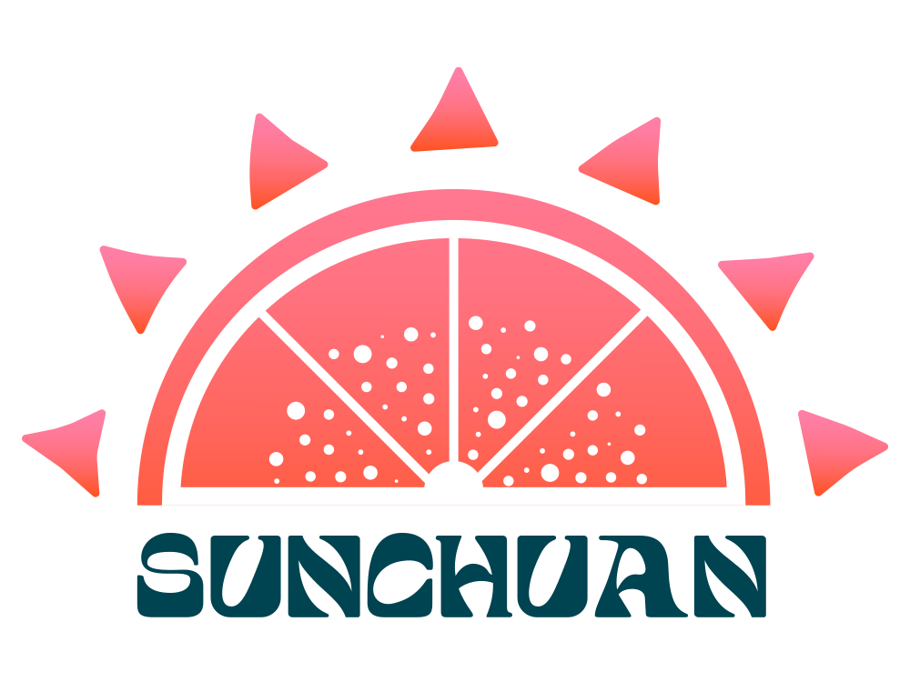
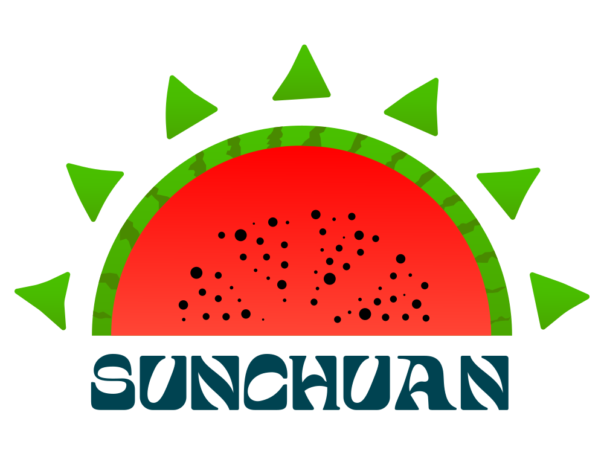
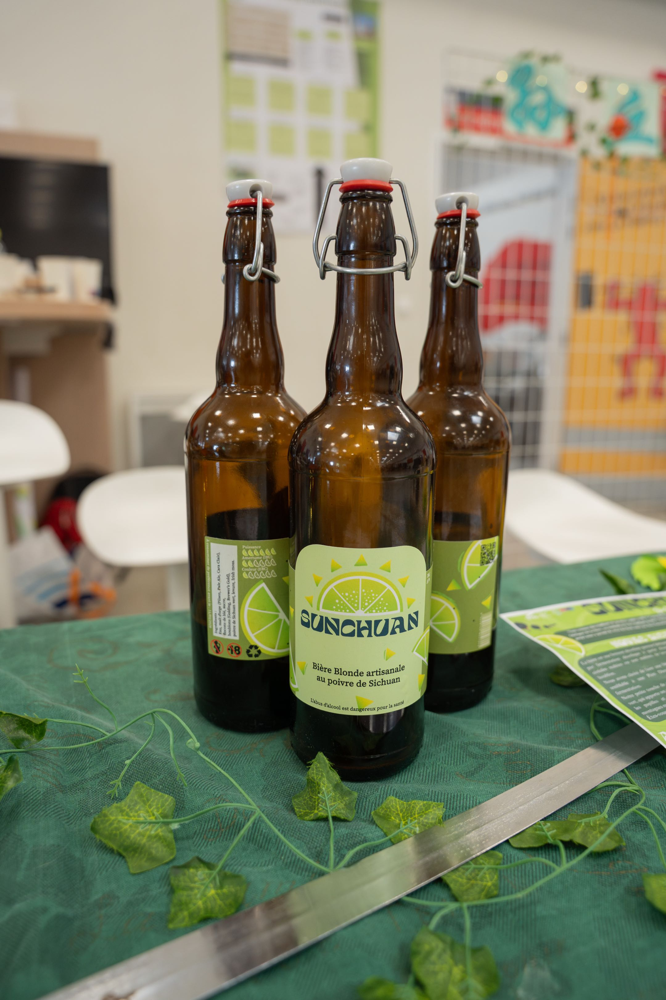

Projet SunChuan
SunChuan est un projet universitaire mené en collaboration avec les étudiants du Génie Biologique. Leur mission consistait à créer une bière blonde artisanale aromatisée au poivre de Sichuan, un ingrédient qui apporte un arôme naturel de citron vert. Notre rôle, en tant qu’étudiants MMI, était de concevoir l’ensemble de l’identité visuelle de leur produit.
Nous avons donc travaillé comme une véritable agence : création du logo, déclinaison de variantes pour les futurs goûts, réalisation d’affiches de sensibilisation à l’abus d’alcool, affiches de promotion de la bière, et conception d’une étiquette destinée à être collée sur la bouteille réelle.
En parallèle, nous avons développé un site web complet en MVC mêlant PHP, HTML, CSS et JavaScript, afin de présenter la bière, son univers graphique, ses valeurs et ses déclinaisons. Ce projet m’a permis de travailler avec de vrais clients, de m’adapter à leurs attentes, et de mobiliser l’ensemble des compétences acquises durant le semestre.
Personnellement, j’ai réalisé : la création du logo, les 6 variantes, l’étiquette de la bière, la bouteille finale avec l’étiquette collée, plusieurs affiches, ainsi que des éléments du site web MVC. J’ai développé des compétences en Illustrator, Photoshop, HTML/CSS, JavaScript et PHP.
Logos et variantes




Étiquette et bouteille finale


Affiches de prévention et de sensibilisation
Affiche de promotion

Affiche de sensibilisation

Site web MVC

Compétences développées
- Création de logo sur Illustrator
- Déclinaison de variantes graphiques
- Création d’affiches (promotion + prévention)
- Création d’une étiquette produit
- Retouche et mise en scène sur Photoshop
- Développement d’un site MVC : PHP / HTML / CSS / JS
- Travail avec de vrais clients et adaptation aux contraintes
- Gestion d’un projet complet de A à Z